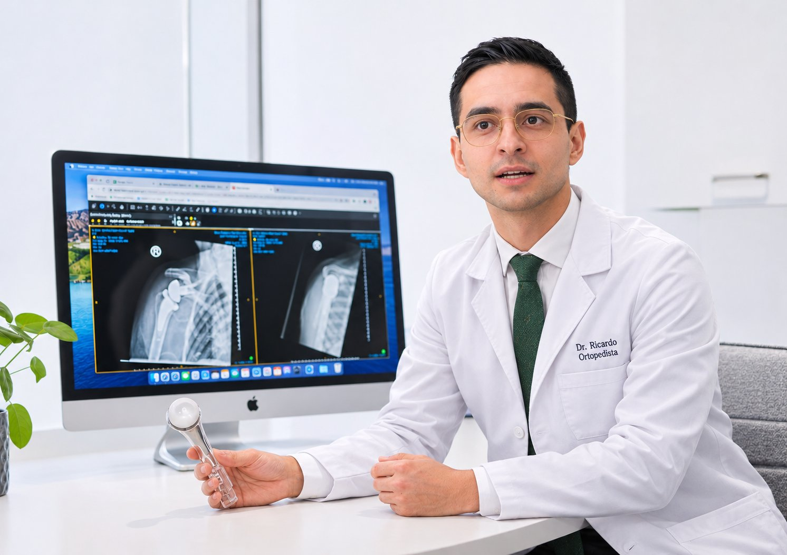

PERFIL PROFESIONAL
Conozca al doctor.
Dr. José Ricardo González Rubio · Ortopedia y traumatología, con formación especializada en artroscopía de hombro y rodilla.

EL MÉDICO
Dr. José Ricardo González Rubio.
Médico ortopedista con enfoque en lesiones y padecimientos de hombro y rodilla. Su práctica contempla la evaluación de cada caso y la consideración de alternativas de tratamiento, incluidas técnicas artroscópicas cuando están indicadas.
TRAYECTORIA PROFESIONAL
Formación y experiencia.
Esta sección se completará con la trayectoria académica, el fellowship, las certificaciones y las cédulas profesionales verificadas.
Aquí te toca, MAI. Necesito tu CV.
Con tu currículum podremos presentar tu trayectoria con la precisión que merece.